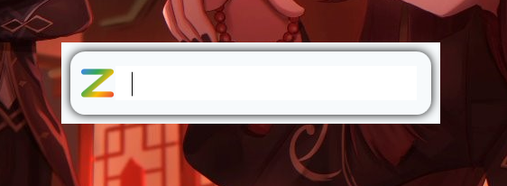
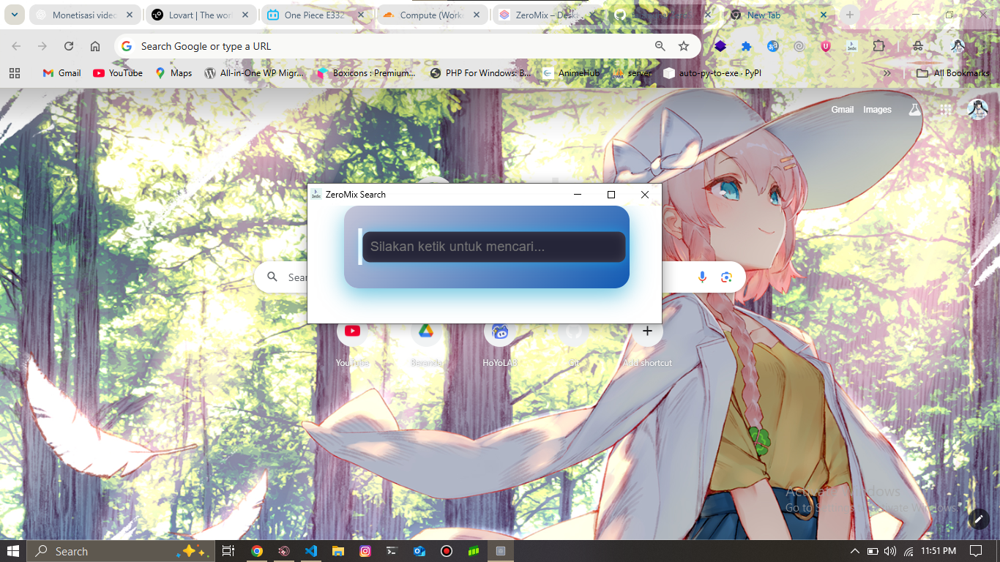

Selamat Datang Di website Kami Update Ke 1.5.5
Aplikasi Desktop & Extension untuk produktivitas tanpa batas 🚀
ZeroMix dibuat dengan performa tinggi, sehingga tetap ringan di PC maupun browser.
Gunakan ZeroMix di Desktop & Extension dengan pengalaman yang sama.
Antarmuka bersih, nyaman, dan bisa disesuaikan dengan kebutuhan kamu.
Fitur canggih yang membantu kamu tetap fokus pada tugas penting dengan saran yang relevan.
/Web
Installer untuk Windows – versi terbaru 1.5.5
Paket Extension untuk Chrome / Edge / Opera


Belum Update gambar ✨